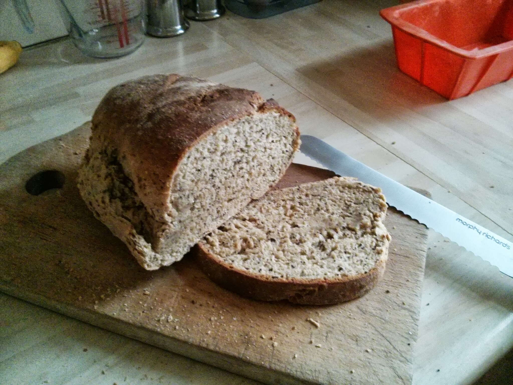

home
How to make bread

Bread is the ultimate comfort food. Made from the simplest ingredients—flour, water, yeast, and salt—it transforms into a golden, crusty masterpiece with a soft, airy interior. Whether enjoyed warm with a smear of butter or as the foundation of a perfect sandwich, it’s a timeless daily ritual.
Equipments
- Large bowl or Stand mixer
- Measuring cups and spoons
- Loaf pans
- Oven
Ingredients
- Warm water: (105-115 degrees)- to activate the yeast.
- Active Dry yeast: Instant or rapid rise yeast can be substituted, following my adaption notes in the recipe card.
- Granulated sugar or honey: the sugar is used to “feed” the yeast and tenderize the bread.
- Granulated sugar or honey: the sugar is used to “feed” the yeast and tenderize the bread.
- Oil: Vegetable or canola oil, or melted butter could be substituted
- Flour: Bread Flour or All-Purpose Flour can both be used with no changes to the recipe. The exact amount of flour used will vary depending on different factors (altitude/humidity etc.). What matters is the texture of the dough. It should be smooth and pull away from the sides of the bowl. It’s important not to add too much flour or your bread will be dense. The dough should be just slightly sticky when touched with a clean finger.
Instructions
- Proof the yeast: In a large bowl or stand mixer add the yeast, water and a pinch of the sugar or honey. Allow to rest for 5-10 minutes until foaming and bubbly. (This is called “proofing” the yeast, to make sure it is active. If it doesn’t foam, the yeast is no good, and you need to start over with fresh yeast).
- Proof the yeast: In a large bowl or stand mixer add the yeast, water and a pinch of the sugar or honey. Allow to rest for 5-10 minutes until foaming and bubbly. (This is called “proofing” the yeast, to make sure it is active. If it doesn’t foam, the yeast is no good, and you need to start over with fresh yeast).
- Prepare the dough: Add remaining sugar or honey, salt, oil, and 3 cups of flour. Mix to combine. Add another cup of flour and mix to combine. With the mixer running add more flour, ½ cup at a time, until the dough begins to pull away from the sides of the bowl.
- Knead the dough: Mix the dough for 5 minutes on medium speed (or knead with your hands on a lightly floured surface, for 5-8 minutes). The dough should be smooth and elastic, and slightly stick to a clean finger, but not be overly sticky.
- First Rise: Grease a large bowl with oil or cooking spray and place the dough inside. Cover with a dish towel or plastic wrap and allow to rise in a warm place* until doubled in size (about 1 ½ hours).
- 5. Punch the dough down really well to remove air bubbles.
- Divide into two equal portions. Shape each ball into long logs and place into greased loaf pans.
- Second rise: Spray two pieces of plastic wrap with cooking spray and lay them gently over the pans. Allow dough to rise again for about 45 minutes to one hour, or until risen 1 inch above the loaf pans.
- Bake: Adjust oven racks to lower/middle position. Preheat the oven to 350 F. Bake bread for about 30-33 minutes, or until golden brown on top. Give the top of a loaf a gentle tap; it should sound hollow.